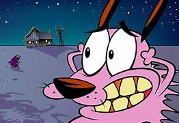

CORAGEM O CÃO COVARDE

Coragem, o Cão Covarde, é o protagonista do desenho animado de mesmo nome.
Ele é um cachorro rosa, medroso, mas muito leal, que mora em uma fazenda isolada
com seus donos, Muriel e Eustácio Bagge. Apesar de seu medo constante, Coragem
enfrenta criaturas e eventos sobrenaturais para proteger Muriel, que ele ama
profundamente. Seu dono, Eustácio, frequentemente o maltrata e não acredita
em seus avisos sobre os perigos ao redor. Mesmo assustado, Coragem sempre encontra
maneiras criativas e heroicas de salvar sua família, tornando-se um verdadeiro
símbolo de coragem.
VOLTAR